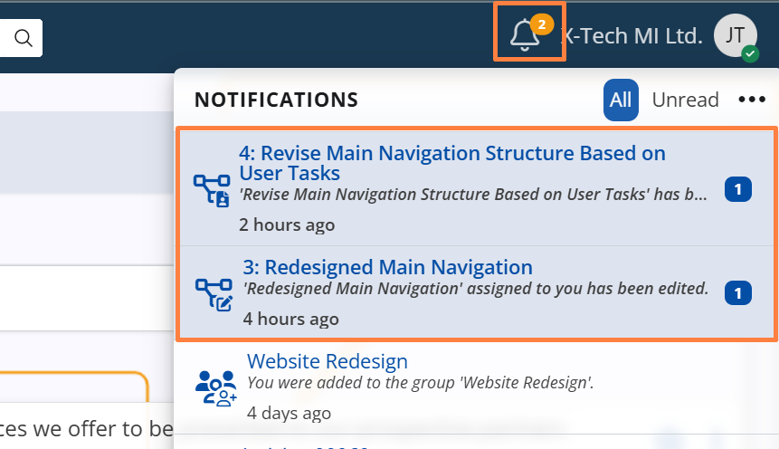

Notifications
Agile PM provides built-in mechanisms to keep users informed about changes and activity in Cases.
These mechanisms ensure that the right people are always aware of updates relevant to their role in the process.
Notifications for assigned users
Agile PM automatically notifies users who are assigned to a Case, helping them stay informed about relevant activities:
- When a user is newly assigned to a Case, the system sends them a notification to ensure they are aware of the new assignment.
- If the Case is later updated by another user (without changing the assignment) - the currently assigned user is notified again.
This ensures that assignees are kept informed not only at the moment of assignment, but also as the Case evolves, allowing them to react promptly to changes that may affect their work.
Notifications for followers
All users who follow a Case receive notifications about key activities — including state changes, field updates in the Case form, entries in the Developments panel, and comments in the Discuss panel.
Followers may include team members who have:
- manually subscribed to the Case, or
- been tagged in a Discussion comment on the Case.
To ensure users stay informed about Cases they initiate, Agile PM automatically sets the Case creator as a follower.
This guarantees that the creator is notified of all future changes, even if they are not actively assigned to the Case.
